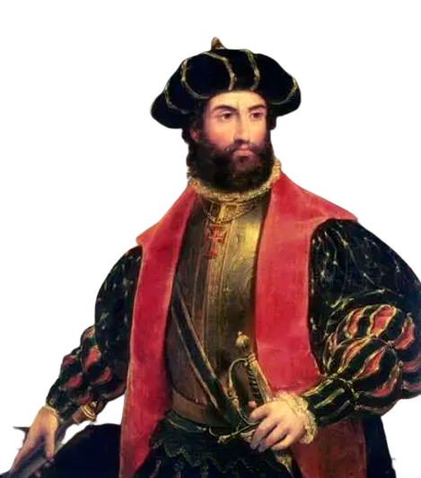
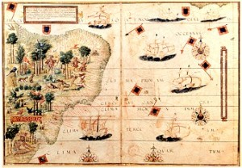
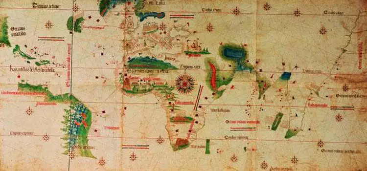

A chegada dos portugueses no Brasil
A chegada dos portugueses ao Brasil ocorreu em 22 de abril de 1500. Neste dia, navegantes liderados por Pedro Álvares Cabral desembarcaram na região da atual cidade de Porto Seguro. Lá permaneceram do dia 22 de abril a 2 de maio de 1500. O principal testemunho escrito da chegada dos portugueses foi o relato do escrivão Pero Vaz de Caminha, que passou à história como a "Carta de Caminha". O descobrimento do Brasil A expedição que chegou ao Brasil no dia 22 de abril de 1500 - data que é comemorada como o Descobrimento do Brasil - começou em Lisboa, Portugal, de onde os navegantes saíram no dia 9 de março de 1500.
Pedro Álvares Cabral comandou essa expedição e, de acordo com a história, foi quem "descobriu" o Brasil. 
De acordo com a história, o destino da expedição era Calicute, Índia, no caminho realizado por Vasco da Gama, em 1497-1498. Mas, vários historiadores concordam que, antes de chegar à Índia, Cabral tinha a missão de conferir se havia terras no sul da América. A esquadra de Cabral era formada por 9 naus, 3 caravelas e 1 naveta. Nela seguiam entre 1200 e 1500 pessoas, dentre as quais, religiosos, soldados e intérpretes. A viagem ocorreu tranquila, com as embarcações parando para abastecer-se de água nas ilhas Canárias e no arquipélago de Cabo Verde. Por volta de 18 de abril, os navegantes já estavam próximos das terras brasileiras, mais precisamente, perto da Bahia de Todos os Santos. No dia 21, os marinheiros avistaram plantas, como o botelho e o rabo d’asno (ou rabo de burro) e, na manhã seguinte, viram aves como o fura-bucho, sinais inequívocos de que havia terras nas proximidades. Mais tarde, avistaram um monte e, por ser época da Páscoa, o chamaram de Monte Pascoal. Os navegantes pensaram que o Brasil era uma ilha e, por esse motivo, o primeiro nome que lhe deram foi Ilha de Vera Cruz (vera, de verdade ou verdadeira), mas depois chamaram-lhe de Terra de Santa Cruz. Este era um sinal de que Cabral e os demais capitães perceberam que o Brasil era um continente e não uma ilha.  Apesar de os portugueses terem chegado ao Brasil no dia 22 de abril, somente no dia 23 um dos capitães, Nicolau Coelho, desembarcou acompanhado de alguns homens. Na praia, esperavam cerca de vinte indígenas da etnia tupiniquim. Na manhã seguinte, as embarcações aportaram e dois indígenas foram levados a bordo. Segundo Pero Vaz de Caminha, ambos ficaram impressionados com as galinhas, e indicaram que haveria ouro em terra. Por fim, em 26 de abril, Pedro Álvares Cabral desembarcou com os religiosos e ordenou que se erguesse um altar, onde foi celebrada uma missa. Em 1º de maio, mais uma missa - acompanhada de uma procissão - foi celebrada. A fim de apurar as coordenadas onde se encontravam, os portugueses construíram um grande astrolábio de madeira e, no dia 2 de maio, os barcos levantaram âncoras e partiram em direção às Índias, deixando na costa dois degredados. Viagem de Cabral Em vermelho, a viagem de ida e em azul, o caminho de volta realizado pela esquadra de Cabral Contudo, a embarcação comandada por Gaspar Lemos voltou a Portugal para comunicar ao rei Dom Manuel I sobre o achamento das terras. Nesta ocasião seria entregue a "Carta de Pero Vaz". Para alguns historiadores, o retorno de Gaspar Lemos a Portugal reforça a ideia de que o descobrimento do Brasil não foi intencional e, sim, planejado pelos portugueses. Contexto histórico da descoberta do Brasil A viagem de Cabral deve ser entendida no contexto das Grandes Navegações empreendidas por Portugal e Espanha, nos séculos XV e XVI. Ambos os países tentavam encontrar um caminho para as Índias e, assim, comercializar diretamente com o continente asiático. Desta maneira, se evitaria os comerciantes de Gênova e Veneza.  A Espanha, com a viagem de Cristóvão Colombo, conseguiu provar que seria possível viajar em direção a leste. Por sua vez, os portugueses navegaram toda a costa africana. A fim de não guerrearem mais pelo domínio marítimo, Portugal e Espanha assinaram o Tratado de Tordesilhas, em 1494. As navegações continuaram. Em 1497-98, Vasco da Gama conseguiu alcançar as Índias e, desta maneira, estabelecer contatos comerciais na região. Em 1500, a esquadra de Cabral partiu com o objetivo de reforçar esses laços. Contudo, acredita-se que ele também deveria constatar se havia terras neste lado da América. As navegações oceânicas de Portugal e Espanha continuaram ao longo do século XVI e nunca mais o mundo foi o mesmo.